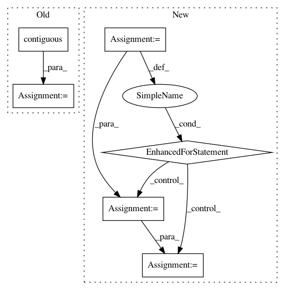

a6236b789b8f4e2e66c8379199f40ecef9afce06,mmdet/core/anchor/anchor_generator.py,AnchorGenerator,valid_flags,#AnchorGenerator#Any#Any#Any#,84
Before Change
valid_y[:valid_h] = 1
valid_xx, valid_yy = self._meshgrid(valid_x, valid_y)
valid = valid_xx & valid_yy
valid = valid[:,
None].expand(valid.size(0),
self.num_base_anchors).contiguous().view(-1)
return valid
After Change
assert self.num_levels == len(featmap_sizes)
multi_level_flags = []
for i in range(self.num_levels):
anchor_stride = self.strides[i]
feat_h, feat_w = featmap_sizes[i]
h, w = pad_shape[:2]
valid_feat_h = min(int(np.ceil(h / anchor_stride)), feat_h)
valid_feat_w = min(int(np.ceil(w / anchor_stride)), feat_w)
flags = self.single_level_valid_flags((feat_h, feat_w),
(valid_feat_h, valid_feat_w),
self.num_base_anchors[i],
device=device)
multi_level_flags.append(flags)
return multi_level_flags
def single_level_valid_flags(self,
featmap_size,
In pattern: SUPERPATTERN
Frequency: 3
Non-data size: 6
Instances
Project Name: open-mmlab/mmdetection
Commit Name: a6236b789b8f4e2e66c8379199f40ecef9afce06
Time: 2020-04-21
Author: 40779233+ZwwWayne@users.noreply.github.com
File Name: mmdet/core/anchor/anchor_generator.py
Class Name: AnchorGenerator
Method Name: valid_flags
Project Name: NVIDIA/sentiment-discovery
Commit Name: 65c9a4857e41dcde4f5dae8a77e6cdf03953646a
Time: 2018-03-19
Author: raulp@dbcluster.nvidia.com
File Name: model/model.py
Class Name: RNNFeaturizer
Method Name: forward
Project Name: dpressel/mead-baseline
Commit Name: f7afc7ae76ed2c328ed02f05e91ccceec8942e0b
Time: 2018-09-26
Author: dpressel@gmail.com
File Name: python/baseline/pytorch/seq2seq/model.py
Class Name: Seq2SeqModel
Method Name: make_input